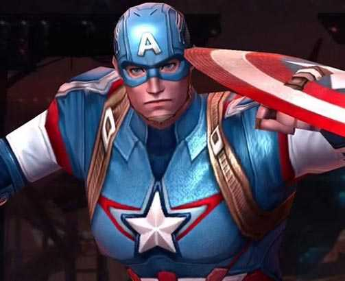

<!DOCTYPE html>
<html lang="en">
<head>
</body>
</html><!DOCTYPE html>
<html lang="en">
<head>
    <meta charset="UTF-8">
    <meta http-equiv="X-UA-Compatible" content="IE=edge">
    <meta name="viewport" content="width=device-width, initial-scale=1.0">
    <link rel="stylesheet" HREF="./personagens.css">
    <link rel="stylesheet" HREF="./mobile.css">
    <title>Personagens da Marvel</title>

    <h3>História dos persagens da Marvel</h3>

    <p class="style_de_texto">

    Peter Parker era um adolescente muito interessado em ciências, sem muitas habilidades sociais e cuja maior preocupação era conseguir um emprego para ajudar seus tios, com quem morava.

    Certo dia, enquanto visitava um laboratório que fazia estudos sobre radioatividade, Peter foi picado por uma aranha radioativa e geneticamente modificada. Aos poucos, ele foi percebendo que aquela picada havia lhe conferido habilidades que não tinha antes:</p>

    força, agilidade e velocidade ampliadas; reflexos e sentidos sobre-humanos; capacidade de escalar paredes; capacidade de gerar diferentes tipos de teias.

    Essas habilidades (que podemos chamar de super-poderes) se assemelham muito às que as aranhas de fato possuem. E, por incrível que pareça, alguns poderes do cabeça de teia fazem muito sentido biológico.

    
    <p> o personagem: O Dr. Robert Bruce Banner era um cientista do governo norte-americano, cujo trabalho era desenvolver uma poderosa bomba gama. Porém, durante um teste no deserto, o cientista percebeu que um jovem invadiu o local e encontra-se próximo demais da bomba que em breve será detonada. Banner dirige-se para o local e consegue lançar o jovem em uma trincheira, mas é colhido pela explosão. Embora sobreviva, logo ele descobre que momentos de tensão fazem com que ele se transforme em um poderoso monstro de pele esverdeada e dono de imensa força, que recebe o apelido de Hulk. O ser é caçado pelo exército e, mesmo quando enfrenta ameaças inimigas, tem suas ações mal-compreendidas e é considerado perigoso pelo governo norte-americano. Entre as inúmeras aventuras que viveu, foi um dos fundadores dos Vingadores, mas deixou a equipe pouco após a sua formação. Ao longo de sua história, a criatura alternou períodos de inteligência com períodos em que não tinha controle sobre suas ações. Atualmente, o Hulk age como um agente especial da SHIELD, a organização de defesa norte-americana.
    Poderes e habilidades: O Hulk é dono de colossal força física e pode saltar grandes distâncias graças aos poderosos músculos em suas pernas.
    Aliados e coadjuvantes: Rick Jones, o garoto que salvou da explosão da bomba gama; Betty Ross, sua ex-mulher; Jennifer Walter, a Mulher-Hulk; Matt Murdock, seu advogado; Maria Hill, diretora da SHIELD.
    Inimigos principais: General Thunderbolt Ross; o Líder, um vilão criado pela radiação gama; o Abominável, também modificado pela mesma radiação; o Maestro, uma versão futura do Hulk.
    Principais roteiristas: Stan Lee, Peter David, John Byrne, Len Wein, Archie Goodwin, Roy Thomas, Steve Gerber, Paul Jenkins, Mark Waid
    Principais desenhistas: Jack Kirby, Sal Buscema, Herb Trimpe, John Romita Jr., John Byrne, Dale Keown, Todd McFarlane, Gary Frank, Liam Sharp</p>
    
    
    <p>Historia do Personagem
        Steve Rogers, nascido em 4 de julho de 1918, depois que renasceu na Era Moderna,
        teve muitas dificuldades para se adaptar a vida civil. No início morava na mansão dos Vingadores 
        e era praticamente um super-herói de tempo integral. Continuou nesse ritmo quando se aliou a S.H.I.E.L.D 
        e teve um romance com a Agente 13. Somente no fim da década de 1960, Steve Rogers começou a buscar uma vida própria.
        Um desentendimento com Nick Fury o fez se afastar da espionagem. Comprou uma motocicleta e saiu em viagem pelo interior do país.
        Retornaria depois que o Caveira Vermelha voltou a atacar. Depois Steve entra para a força policial de Nova York,
        mas logo tem a sua vida conturbada em função de acusação de que era corrupto, pois quase não aparecia para as rondas e mesmo assim não era demitido (seus superiores conheciam sua identidade).
        O acusador era seu parceiro, que logo se descobriu que agia como o vilão Chefe Encapuzado.</p>
    </p>

    <p>Escolha o seu personagem</p>

    <div1 class="imagem" data-title="legenda # 1">
      <p>Capitão América</p>
    
    </div>
      
    <div class="imagem" data-title="legenda # 2">
      <p>Homem Aranha</p>
    
    </div1>
   
    <div class="imagem" data-title="legenda # 2">
      <p>Hulk</p>
    
    </div>  
        
      </div>
    

    <h2>Geração e lançamento de teias</h2>

    <div class="bottom_bar"> ... </div>
    
    <p>A teia de uma aranha é como se fosse uma corda, mas ela é diferente de qualquer corda produzida por um ser humano. Ela não fica guardada inteira dentro do organismo da aranha, ela é uma espécie de gel de proteínas que, quando lançado através do abdômen, entra em contato com o ar e se solidifica, tornando-se finos fio de seda.</p>
       
    
    

    <footer>
        <footer>Todos os direitos reservados. Projeto HTML</footer>
   </footer>
       
    <div class="imagem">
    
    </div>

    <div class="imagem">
    
    </div>

    <div class="imagem" >
    
    </div>
 </head>
<body>
    
</body>
</html>